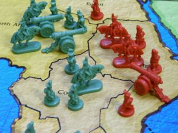
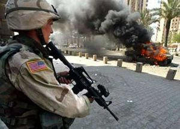

Risk
 De: La Frikipedia, la enciclopedia extremadamente seria.
De: La Frikipedia, la enciclopedia extremadamente seria.
{{ }}
Típico Juego de mesa comercial aparentemente inofensivo que sólo se anuncia en navidad, aunque se venda durante todo el año, cuya cancioncita del anuncio está protagonizada por un simpático flautín que todo el mundo recuerda (y no, no es el flautista de Melín.)
Si os fijáis el que ha hecho el planisferio no aprobó ni primero ni papa, ya que coloca España y Francia en el mismo país.
Material del juego
 Fotografía satelital de una guerra en
África - Un tablero donde se reflejan los diferentes países de todos los continentes (Asia, Europa Occidental ? Como es lógico el empollón aun no se ha dado cuenta de que no es un mapa cartográfico reglamentario sin escala, y hay quien debe recordarle que es un juego.
- Unas cartas con objetivos, que se reparten antes de empezar el juego. Lo primero que hace la gente al recibirlas es leerla, y al ver que su objetivo será imposible de realizar (“conquista América del Norte y Sud-África) piden que se vuelvan a repartir. En caso que la mayoría este de acuerdo se hará. Pero lo malo es que al recibir el nuevo objetivo te das cuenta que es peor que el otro y pides que se vuelvan a cambiar.. pero todo el mundo ya esta bien con el suyo..así que te quedas con tu nuevo objetivo: (destruye al ejercito rojo, al verde y al amarillo, y ya de paso conquista Asia, y Europa).
- Batallones de diferentes colores. (rojo, azul,verde,negro, amarillo y fucsia). Atento: se rápido y cógete un color , porque el fucsia siempre es el ultimo que queda y es el que nadie quiere coger… porque quien quiere defender el honor de un ejercito rosa ?(si aceptas a regañadientes el fucsia puede que cuando vuelvas a tu casa te encuentras a una zarigüella fucsia sedienta de sangre)
- Cartas con el nombre de cada país y con un dibujito debajo de un soldado, caballo o cañon. Estas cartas al igual que las de objetivo se reparten a principio de la partida y sirven para colocar los soldaditos en el nombre del país que te indica la carta. Esta es una de las tareas mas complicadas del juego.. situar tus soldaditos en los países de “Yatkuskt”, “Madagascar”, “kamtkatcha”, “Ontario”, "Islandia"... que te pasas media hora buscando y preguntando donde coño esta “katmcatcha” ! hasta que el empollón de la partida te dice: esta tocando “ yajutsk” irkutsk” y “mongolia” y te lo dice sin mirar el mapa..así de memoria…pero tu te quedas igual asi que prefieres preguntarle al compañero de al lado..que al igual que tu, tiene demasiada faena en buscar sus propios paises como para decirte a ti donde coño esta “kamtacha”.
Una vez que todo el mundo ha puesto sus soldados en el mapa, ves que los tuyos han quedado totalmente dispersados por los diferentes continentes. Pero no pierdes la esperanza y piensas: bueno.. en el fondo tampoco esta tan mal… puedo hacer esto y esto y luego atacar aquí y enviar estas tropas allí y unir eso con lo de mas allí y conquistar el mundo.
Ahun no ha empezado la partida y tu ya la estas acabando mentalmente y pensando : dios mio que bueno que soy.
Pero llega la hora de la verdad.
Los primeros pasos
El juego empieza cuando tu y tus amigos de toda la vida decidis quedar para hacer una partidita para matar el tiempo.( ya que la play o el ordenador no funciona)
Antes de empezar la partida hay que dejar bien claras cuales van a ser las reglas durante todo el juego, ya que el risk no tiene unas normas fijas establecidas, sino que en cada casa se juega como les da la gana..ya que nadie nunca se ha leído las instrucciones de principio a fin. Las normas se han ido transmitiendo de generación en generación, siendo, así pues, diferentes en cada familia.
también hay que dejar muy claro que, por favor, no se tire encima del mapa los dados, que es donde hay todos los soldaditos que tanto esfuerzo nos ha costado montar. Pero siempre hay el tipico que después de haberlo repetido 5 veces seguidas va el tío y se carga a medio mapa con los 3 dados. Entonces hay que volver a montarlos tal y como estaban..pero ya que nadie se acuerda..tu los pones donde mas te convenga.
Empieza la partida y ves como nada de lo que habías planeado antes te sale como tu quieres y encima los demás no paran de atacarte, así que decides aliarte con alguien…pero ya es tarde..los otros 5 jugadores ya tienen sus propias alianzas de no atacarse mutuamente y te joden la partida, y ademas de todo esto los putos dados no te responden..y sólo haces que sacar unos y doses.
Pero hay veces en las que alguna alianza se rompe y el juego cambia por completo. Ya no es un juego, es la Guerra! La lucha por el honor! Tu amigo te ha traicionado y no se lo vas a perdonar.
Ya no es tu amigo.
Empiezan las discusiones.
El juego se para y todos están en contra de todos.
Entonces es cuando pasas de ver a tu amigo como lo que es , tu amigo, a un hijo de puta, feo asqueroso, mentiroso y traidor, que encima de que lo invitas a tu casa para que pase el rato, ya que el pobre muchacho siempre esta solo en su casa marginado, te hace lo que te ha hecho, y lo peor de todo es que se lo dices, y el se rebota, entonces el otro se pone por medio para poner paz, pero este que pone la paz es el que estaba acosando al ejercito amarillo, que inmediatamente salta para picarse Él también. Desde este momento cada turno es igual o peor, y cada vez se hace mas largo e insoportable..así que hay gente que obta entre turno y turno, montar con los soldaditos que no están en el mapa, figuras a lo: defensa tortuga, flecha, rombo etc.
así es como se va desarrollando el juego, hasta que al final uno de los participantes del juego se ha de ir, no sin antes proclamar que el iba ganando, lo que hace que los demás se vuelvan a picar otra vez, rompiendo así el cambio de tema que se había producido durante dos turnos.
Al final decides enterrar el juego, para nunca mas volver a jugar, ya que durante la partida has perdido a 5 de tus mejores amigos por no ceder "camtcaha" la tierra que tanto te había costado encontrar al principio de la partida.
Tipos de jugadores
En este excitante juego se pueden distinguir a simple vista una variedad de gente que se esconde detrás del cuerpo de esos a los que llamas amigos.
-El experto: El que de pequeño vió el anuncio y se lo trajeron los reyes, y fue el único que se atrevió a leer las instrucciones y a jugar como consta en ellas, cosa totalmente contraria a los niños de su clase, por eso hay un Risk en todos los hogares de España y nadie sabe jugar, algunos ni lo han abierto nunca. No puedes contradecirle, el sabe mas que tú, es mas fuerte que tú, es mas guapo y mas inteligente que tú, y sabe jugar. Se ha pasado 1 cuarto de su vida jugando a este juego y no pierde el tiempo con tonterías insignificantes como tú. Si eres amigo suyo tienes un tesoro ya que puedes arrimarte a él y puedes dejar que te utilice como quiera, porque serás su aprendiz, y algun dia llegarás a ser un gran jugador generalmasterPRO del Risk como él. La gente que no sabe jugar le tiene miedo, les mira con desprecio y algunos aseguran haber jugado con expertos con la mano debajo de la chaqueta como Napoleón, o con cascos de la IIGM. Otros dicen que en los colegios y universidades los mapamundis se llenan de pintadas de colorines y frases tipo " Asia y Oceania, azul 4ever". No hay muchos pero existen y nadie sabe donde.
- El principiante: Este es el mas reconocible de todos.El que nunca en su vida ha jugado a este juego y no tiene ni idea de que consiste, así que será el jugador al que todo el mundo engañará/timará/utilizará. Ej:¿ pero porqué pierdo yo que he sacado un 6 y ganas tu sacando un 1 ? A ok..ya lo entiendo, pero porqué no recibo mis soldaditos y todos los demás si? Creo que así no se juega, voy a leerme las instrucciones...- a lo que todo los demás responden a la vez: ¡JODER QUE TE CALLES YA!¡TE ESTAMOS ENSEÑANDO ASÍ QUE SENTADITO Y QUIETECITO!y ahora me devuelves el librillo de instrucciones...
- La mosca cojonera: El jugador que se apunta a la partida para jugar con sus amigos y acaba sin ellos. Pasa de su objetivo y se dedica a tocar los huevos al personal situando sus batallones en puntos estratégicos de otros jugadores, impidiendo que estos avancen. No intenta ganar, no quiere, solo intenta que no lo hagan los demás. Este personaje se gana el odio de todos los jugadores en 3 turnos, y el sueño de muchos es verle morir primero que todos. Lo único bueno que tiene este ser, es que pone de acuerdo a todos los jugadores enfrentados entre sí para insultarlo y recordarle lo cabronazo que es, aunque esto le reconforte y le provoque una malvada sonrisa que enfurece más a sus ex-amigos. Al igual que los parásitos, te invaden y te joden mucho, pero con un poco de empeño acabas con él, y probablemente sea una de tus mejores sensaciones jugando al Risk, porque a no ser que ganes, no hay muchas mas.
- El parásito: Tu tienes tu continente conquistado, eres feliz pero...mierda, grandísimo hijo de puta, te están invadiendo un país. Te lo han quitado. Has perdido ese continente que tanto te ha costado, y ahora tiene un peñote de soldados en tu ex-territorio. Así que te va a costar lo suyo hacerlo fuera, y por mas que lo intentes seguramente no podrás y te volverás loco de rabia pensando que era tuyo y ya no lo es.
- El gran invasor: Estos empiezan siendo parásitos, lo que mucho mas fuerte y con muchas mas ganas de broncas y de recibir insultos te empieza a invadir el continente entero, cosa fácil para ellos ya que te han reventado una frontera, y ahora todo es coser y cantar, cosa difícil de asimilar para ti, ya que ves que todo tu precioso,osea supermegacolor fucsia se esta borrando del mapa. Se te rompen los sueños y las esperanzas y odias a muerte a tu invasor. Luego, tras haber intentado aliarte inútilmente con alguien para subsistir en el juego, te pasas las siguientes rondas del juego callado y con cara de melancolía y rabia a la vez pensando "todo esto que estoy viendo....era...mio....",cosa totalmente contraria a la cara de poder y satisfacción del invasor.
- El invadido: Ya has tenido una breve descripción en las lineas de arriba. Solo falta añadir que cuando le penetran en el territorio es cuando quiere dejar de jugar y piensa que el juego es una puta mierda y que no sabe que coño hace aquí. Recordemos que seguramente él fue invasor en sus mejores tiempos, y la sensación que se siente al ver crecer tu imperio es mejor que cualquier mamada del mundo y no quieres que se acabe la partida nunca para disfrutar tu suerte, lo que el invadido nunca se suele acordar de eso.
- El visionario: El que no tiene nada pero dice que tiene una estrategia muy buena y que construirá su gran imperio y que se aliara con este para llegar a no se donde y que España Francia y Portugal nunca se han unido y que no se qué...Normalmente ese imperio que quieren levantar nunca llegará a levantarse, y cuando se acabe la partida porque todo el mundo esta hasta los huevos de jugar se discutirá con todo dios porque él iba ganando, porqué lo tenia todo en su cabeza, porque se aliaría con este para llegar a no se donde porque no se que....la mejor manera de calmarlo es diciéndole " es verdad, ibas a ganar, eres un gran estratega". Aunque te vengan muchas ganas de darle una colleja cuando asienta la cabeza cuando le des la razón, no se la des, no merece la pena.
- El empollón: Suele ser un visionario aunque también puede discutirte la geografía del mapa, la historia de cada territorio, y usar estrategias Napoleónicas o no se que polladas para perder luego.
- El suertudo: El que siempre saca 6 y 6, o 5 y 6, o 6 6 6. Este puede ganarte con un soldadito de mierda a la invasión de 9 soldadotes machotes de los tuyos.
- El primo pringao: Los dados no suelen ser mas altos que un dos. Es el opuesto al suertudo. Acaba cansado con ganas de llorar y de dejar de jugar. La suerte nunca esta de su lado, y suele ser un objetivo de burlas y mofas de los demás al ver su situación.
- El faltón: El que insulta insulta y no deja de insultar hagas lo que hagas. Este ser suele ser poco original a la hora de insultar y su mayor potencial de insultos por minuto es cuando se llevan 4 horas jugando y la partida no acaba. Suele provocar serias peleas que podrían acabar a ostias limpias y es una de las causas de acabar una partida antes de que llegue a su fin.
- El que se alía o perrito faldero: Este ser suele ser un invadido en sus inicios, o un tío que vé crudo su destino en la partida. Luego busca refugio tras el culo de algún enemigo suyo y tras aceptar la alianza se va haciendo fuerte. Estos seres están mal vistos en el juego pero todo el mundo acaba chupándole el ojete a otro para no desaparecer.
- El que se ha aliado con el que se alía: Busca una forma de aprovecharse del moribundo que le pide ayuda y por eso acaba aceptando. Lo que no sabe es que tanto él como el otro se irán haciendo fuertes y acabaran enfrentados o traicionados. Juntos suelen crear un gran mapa de dos colores únicamente, y los rivales se aliaran entre sí para hacer lo mismo, es automático.
- El que hace una tregua: No quiere que le invadan un territorio y hace una tregua de paz con el enemigo de la frontera. Normalmente suelen funcionar, pero nadie se fía de nadie porque te has quedado sin amigos, por eso te sentirás inseguro y pondrás un puñado de soldados en ese territorio por si las moscas.
- El traidor: Este ser hijo de la gran puta puede ser aliado o de tregua. Aprovecha el despiste de su "amiguito de batallas" para joderse la partida rompiendo el trato sin un aviso previo. Suele provocar una gran oleada de insultos al traicionado contra él. El traidor podria tener este malvado plan pensado o espontáneamente, nunca se sabe, pero el traidor suele acabar las partidas siendo un gran candidato a ganarla y con el odio de un amigo suyo ganado de porvida que causará estragos en el futuro. Las traiciones no son buenas, pero te arreglan el mapa.
- El traicionado: Solo falta decir que su mejor amigo le causó daños irreversibles a su orgullo y su amistad. Suele acabar la partida perplejo con lagrimotes en los ojos pidiendo explicaciones " Por qué?? yo confiaba en ti!! me fallaste!!" o puede acabar rallando el coche del traidor.
- El cabezón: El que quiere por cabezonerías suyas adquirir un territorio, y lucha con fuerza y centra todo su odio/rabia/ganas de ganar hacia ese territorio olvidando por completo que todos sus otros territorios están siendo perdidos por pocas defensas. Este acaba teniendo un único territorio que hace frontera con el que quiere adquirir y suele decir " por huevos, lo conseguiré por huevos". Nunca llegará a pisar ese territorio y cuando lo eliminan dice.." casi cae e?? por los pelos.."
- El que cumple sus objetivos:El más riguroso y mejor jugador del Risk. El sigue las instrucciones y cumple el objetivo que se le ha encomendado, como buen soldado que es. A raíz de esta gente nacen los cabezones, cuyo objetivo les queda en la otra punta del mapa, pero el lo ha de cumplir, es su tarea, su misión, juega para ello.
- El que hace guerrillas y ejércitos muy bonitos porque se aburre y no tiene otra cosa mejor que hacer: nada que decir
Consecuencias
Las partidas de Risk acaban con enemistades y peleas casi todas las veces por no decir que es un juego que el 60% de las partidas jugadas no se acabaran nunca. Así que si no has empezado a jugar, no lo hagas que luego te engancha y te mata por dentro. Como el tabaco, pero peor.
Rupturas y Enfados Famosos
Las catastróficas consecuencias del Risk han supuesto la división de muchos famosos:
- The Beatles: Fue Yoko Ono quien causó la división de este grupo, pero porque ayudó a John Lennon en una partida de Risk que estaba casi perdida, conquistando Kamchatka propiedad de Paul y Lida McCartney, Eso supuso un golpe bajo para el resto del grupo,que tenia pequeñas y productivas colonias de monos capuchinos en Siberia y la Manchuria, asi como fumaderos de opio en la India,lo que provoco que el grupo poco a poco se fuera disolviendo.
- Los Matamoros: Kiko y Coto se habían llevado bien toda su infancia hasta que su madre decidió comprarles un Risk. No había quien les ganara: sus amigos, familiares...todos caían ante ellos. El problema apareció con el reparto del mundo, pues ambos querían Marruecos, por su gran
cantidad de farlopa cultura que allí se ecuentra.
- Ángel Martín y Carmen Hornillos: El supuesto enfado de estos dos viene en teoría del cachondeo de Ángel hacia Canal 7. Pero esto es en realidad la excusa que utiliza Hornillos para reconocer que Ángel el ganó al Risk. Pero es que nadie puede vencer a Ángel, pues es Napoleó está entre sus antepasados, ¿de dónde creéis que viene su pequeño tamaño sino? Tambien existe la teoria de que jugaron una partida entre Angel, Emilio Aragon, y Vasile, y lo dos primeros se aliaron contra Vasile, entonces este
payaso infantil señorle puso una demanda para que no usaran sus imagenes.
- Dios y el Demonio: su infinita pelea viene por el control del mundo a través de...pues de que va a ser, un tablero de Risk.
- Axl Rose y Slash: Las malas lenguas dicen que el enfado de Axl con Slash viene de su chistera, y están en lo cierto, pues era de la chistera de donde Slash se sacaba cartas para poder obtener más batallones, y Axl Rose no aguantaba este tipo de trampas.
Frases típicas
- ¡No vale, a ti te tocan Napoleón, a mi la mierda de ejército de Manolo Escobar!
- No Fidel, no puedes conquistar Cuba aunque sea tuya.
Personajes adictos al Risk
 Turno de Bush. Se recomienda jamás jugar contra él, no sabe perder
Ejemplo de una típica partida de Risk
El cortometraje "El Pacto del Estrecho de Bering" recrea una partida de Risk entre varios frikis.
El Pacto del Estrecho de Bering en Youtube.com
Autor(es):
- JacintoCanek
- Alex2610
- Roms
- Viento
- Rictus
- Azulejos
- Igna
- The legend friki aburrio de 13 años sin nada que acer
- MPB
- Dark esnob
Frikipedia 2005-2016, Licencia
GFDL 1.2 - Extraído por FrikiLeaks